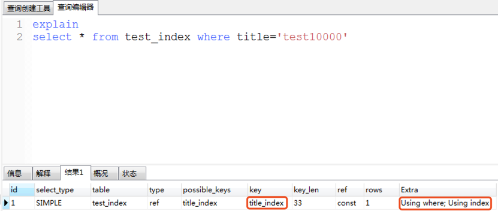

索引
- 思考：在图书馆中是如何找到一本书的？
- 一般的应用系统对比数据库的读写比例在10:1左右，而且插入操作和更新操作很少出现性能问题，遇到最多的，也是最容易出问题的，还是一些复杂的查询操作，所以查询语句的优化显然是重中之重
- 当数据库中数据量很大时，查找数据会变得很慢
- 优化方案：索引
语法
- 查看索引
show index from 表名;
- 创建索引
方式一：建表时创建索引
create table create_index(
id int primary key,
name varchar(10) unique,
age int,
key (age)
);
方式二：对于已经存在的表，添加索引
如果指定字段是字符串，需要指定长度，建议长度与定义字段时的长度一致
字段类型如果不是字符串，可以不填写长度部分
create index 索引名称 on 表名(字段名称(长度))
例：
create index age_index on create_index(age);
create index name_index on create_index(name(10));
- 删除索引：
drop index 索引名称 on 表名;
示例
创建测试表testindex
create table test_index(title varchar(10));
向表中加入十万条数据
- 创建存储过程proc_test，在存储过程中实现插入数据的操作
- step1：定义分割符
delimiter //
- step2：定义存储过程
create procedure proc_test()
begin
declare i int default 0;
while i<100000 do
insert into test_index(title) values(concat('test',i));
set i=i+1;
end while;
end
//
- step3：还原分割符
delimiter ;
- 执行存储过程proc_test
call proc_test();
查询
- 开启运行时间监测：
set profiling=1;
- 查找第1万条数据test10000
select * from test_index where title='test10000';
- 查看执行的时间：
show profiles;
- 为表title_index的title列创建索引：
create index title_index on test_index(title(10));
- 执行查询语句：
select * from test_index where title='test10000';
- 再次查看执行的时间
show profiles;
缺点
- 虽然索引大大提高了查询速度，同时却会降低更新表的速度，如对表进行INSERT、UPDATE和DELETE，因为更新表时，MySQL不仅要保存数据，还要保存一下索引文件
- 但是,在互联网应用中,查询的语句远远大于增删改的语句,甚至可以占到80%~90%,所以也不要太在意,只是在大数据导入时,可以先删除索引,再批量插入数据,最后再添加索引
分析查询
explain
select * from test_index where title='test10000'
